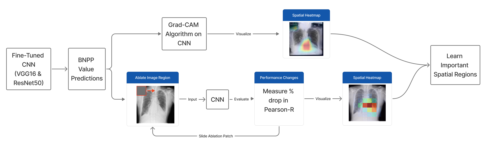

What is the "Black Box" in Medical AI?
In medical AI, a “black box” refers to any model—such as a convolutional neural network (CNN) or large language model (LLM)—that makes predictions without clearly revealing how those predictions were formed. These models can analyze thousands of imaging features or textual cues that are invisible to human clinicians, yet offer no built-in explanation for why a decision was made.
This lack of transparency becomes a major barrier in clinical settings. Physicians must be able to justify diagnoses and treatment decisions, and opaque predictions make it difficult to assess whether a model is relying on valid clinical evidence or spurious correlations. Even highly accurate systems may go unused if clinicians cannot understand what the model is focusing on or why its output should be trusted.
Because medical decisions carry real patient risk, explainability is not optional—it is essential. Understanding a model’s reasoning helps clinicians evaluate reliability, identify potential biases, and integrate AI tools safely into workflows. In our project, explainability serves as the foundation for analyzing how imaging and language models interpret features related to pulmonary edema.
Why Pulmonary Edema Matters
Pulmonary edema is a life-threatening condition caused by fluid accumulation in the lungs, often linked to heart failure or cardiac dysfunction. Because symptoms can progress rapidly, delayed or inconsistent detection can significantly worsen patient outcomes. Clinicians typically rely on chest X-rays and radiology reports to assess edema, but these indicators can be subtle, vary in appearance, and be interpreted differently across readers.
This makes pulmonary edema a powerful case study for explainable medical AI. Even when modern models—such as CNNs or LLMs—perform well, their predictions remain difficult to interpret without dedicated explainability methods. To be clinically useful, these models must reveal what visual regions they focus on and which linguistic cues influence their decisions.
Our project explores how multimodal AI systems can support clinicians by analyzing both imaging and text while also providing transparent explanations of the features driving their predictions. The goal is not to replace clinical expertise, but to build tools that enhance consistency, accelerate triage, and ultimately improve patient safety in high-risk scenarios.
What We Built
To explore how explainability can improve trust in medical AI, we built a multimodal system that analyzes both chest X-ray images and radiology report text while providing transparent explanations for each model’s predictions. Our approach combines two components: a convolutional neural network (CNN) for imaging, and a fine-tuned large language model (LLM) for clinical text.
Imaging Model (VGG16 & ResNet50)
We trained two CNN architectures—VGG16 and ResNet50—to predict a continuous biomarker value (BNPP) directly from grayscale chest X-rays. Following our poster’s model design, we replaced each network’s final classification layers with a single linear output for regression.

These models allow us to study how different image features influence biomarker-related predictions, which is clinically relevant for assessing pulmonary edema severity.
Text Model (MediPhi + LoRA)
For the textual component, we fine-tuned Microsoft’s MediPhi—a domain-specific medical LLM—using Low-Rank Adaptation (LoRA). The model learns to classify edema severity into four structured categories: absent, mild, moderate, and severe. Only lightweight adapter layers were updated, while the base model remained frozen.

This setup enables the LLM to pick up clinically meaningful language patterns in radiology reports without needing full retraining.
Explainability Across Both Modalities
A central goal of this project is not only to generate predictions, but to understand what drives them. To do this, we applied several complementary explainability techniques:
- Grad-CAM to visualize the specific chest regions most influential to CNN predictions
- Image Ablation to measure how masking different areas affects model performance
- LIME to identify which words or phrases contribute most to LLM severity classifications
- Cosine Embedding Analysis to examine how the LLM organizes clinical concepts in embedding space


Together, these methods reveal whether the models rely on clinically meaningful features rather than irrelevant patterns—addressing the “black box” problem in a practical, interpretable way.
Results
Our results evaluate how both the CNN and LLM models make decisions, and whether their internal reasoning aligns with clinically meaningful features. By analyzing image regions, text tokens, and embedding relationships, we uncover patterns that help explain each model’s predictions.
CNN Explainability Findings (VGG16 & ResNet50)
Image Ablation
When we systematically masked different regions of the X-ray, both CNNs showed the largest drop in performance when the central chest areas were removed. In contrast, masking the peripheral borders caused minimal change in prediction accuracy. This suggests that both models rely primarily on clinically relevant lung and cardiac regions, rather than learning artifacts from the edges of the image.
Grad-CAM Attention Maps
Grad-CAM visualizations revealed clear differences between the two CNN architectures:
- VGG16 produced broad, diffuse activation across the chest, including the lungs and cardiac silhouette.
- ResNet50 showed more consistent and concentrated attention, especially around the heart and areas associated with pulmonary congestion.
These patterns match clinical expectations—pulmonary edema often manifests through perihilar haziness and cardiac-related changes—indicating that both models are focusing on medically meaningful regions.
LLM Explainability Findings (MediPhi + LoRA)
Global LIME Token Importance
LIME analysis of the fine-tuned MediPhi model shows that its predictions reflect clinically interpretable linguistic structure:
- Higher severity levels (moderate/severe) are driven by terms indicating intensity, progression, congestion, or worsening conditions.
- Lower severity or absence classifications rely on expressions reflecting stability, negation, or uncertainty.
This indicates that the model is not simply memorizing phrases, but is using medically meaningful descriptors consistent with radiology report conventions.
Cosine Embedding Analysis
The embedding similarity matrix shows that the LLM naturally organizes medical terms in a clinically meaningful way:
- Related edema-associated terms cluster near each other
- Negation-related or “normal” descriptors shift in the opposite direction
- The structure emerges independently of prediction-level attribution
This suggests the LLM has learned a coherent semantic space that aligns with radiological language patterns.
Overall Insights
Across both imaging and text modalities:
- The CNNs rely on core clinical regions linked to pulmonary edema
- ResNet50 demonstrates more anatomically precise focus than VGG16
- The LLM captures clinically realistic linguistic patterns
- Embedding analysis confirms that the model learns meaningful semantic structure rather than random associations
These results collectively show that the models are learning patterns that align with clinical reasoning, reducing the “black box” nature of their predictions and improving interpretability.
Methods
Conclusion
Our findings show that explainability methods provide clear insight into how both imaging and text models make decisions about pulmonary edema. On the imaging side, CNN attention maps and ablation analyses consistently highlighted cardiac and perihilar lung regions, which are clinically central to edema assessment. ResNet50 demonstrated more localized and stable focus compared to VGG16, reflecting the benefits of deeper residual architectures.
For the language model, LIME revealed that MediPhi relies heavily on clinically meaningful descriptors—such as markers of severity, progression, or negation—to arrive at its predictions. Cosine embedding analysis further showed that the model organizes medical terminology into coherent semantic clusters, suggesting that its internal representations mirror real clinical structure even without explicit supervision.
Taken together, these multimodal results indicate that both the CNN and LLM components are not simply producing black-box outputs—they are leveraging features that align with established radiological reasoning. By making these internal patterns visible, our system advances the goal of transparent, trustworthy medical AI and demonstrates how explainability can support safer, more interpretable decision-making across imaging and text-based clinical workflows.
Impact + Future Work
Impact
Our multimodal system aims to support clinicians by providing faster, more consistent, and more interpretable assessments of pulmonary edema. Because both chest X-rays and radiology reports can be difficult to interpret — especially when visual signs are subtle — AI tools that highlight key image regions and summarize important clinical details may help reduce missed findings and speed up patient evaluation.
By combining imaging and text-based reasoning, this project moves toward AI systems that are not only accurate, but transparent and easier for clinicians to trust. Large-scale imputation of unlabeled reports may also help hospitals better understand trends in disease severity, improve triage decisions, and assist researchers studying pulmonary edema progression.
Future Work
Although our Quarter 2 system shows promise, several directions could further improve real-world readiness:
- Larger and more diverse training datasets: Expanding beyond a single-institution dataset would help the model generalize across different scanners, hospitals, and patient populations.
- Incorporating clinical metadata: Adding structured information such as vitals, lab values, and patient history could improve prediction accuracy and contextual reasoning.
- Stronger explainability tools: Future versions could include counterfactual explanations, similar-case retrieval, and uncertainty estimates to make model outputs even more transparent.
- Real-time clinical workflow integration: Incorporating the system into PACS or report-writing environments would allow clinicians to use the system during real-world decision-making.
- Prospective evaluation: Testing the system on new, incoming radiographs and reports is a key next step toward validating its clinical usefulness.
- Expanding to other thoracic findings: The same framework could be extended to detect conditions such as atelectasis or pleural effusions.
Meet the Team
Mentor

Albert Hsiao
Mentor
Students

Brian Huynh
Student Researcher

Joshua Lee
Student Researcher

Zoya Hasan
Student Researcher